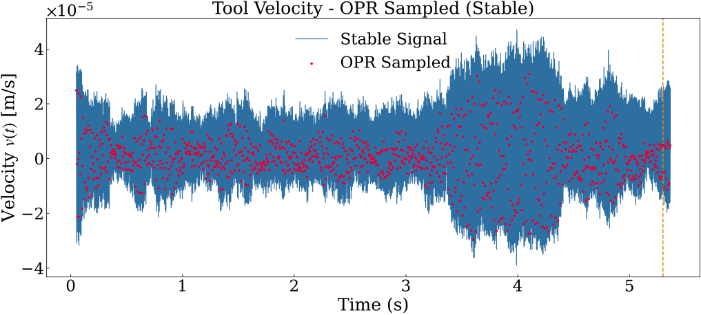

OPR Sampling¶
This page explains OPR (One-Per-Revolution) sampling — the pre-processing step that converts the raw high-frequency vibration signal into a much smaller sequence that is synchronised with the spindle rotation.
1. Why Not Use the Raw Signal Directly?¶
The raw accelerometer or displacement signal is sampled at \(f_s \approx 20{,}000\,\text{Hz}\). At 12 000 rpm (\(f_r = 200\,\text{Hz}\)) that is 100 samples per revolution.
Processing 100 values per revolution, per segment, per test decision is:
- Redundant adjacent samples are highly correlated within one revolution.
- Slow entropy estimation on long windows is expensive.
- Inconsistent a "segment" defined in time does not correspond to the same number of revolutions at different spindle speeds.
OPR sampling solves all three problems by keeping exactly 1 sample per revolution, making the segment length physically meaningful: \(N_\text{seg}\) OPR samples = \(N_\text{seg}\) revolutions = \(N_\text{seg}/f_r\) seconds.
2. How OPR Sampling Works¶
OPR sampling is a uniform downsample by an integer factor Figure 1:
The downsampled signal is:

Figure 1. Velocity sampling procedure employed for estimating the OPR.
Integer requirement
sample_opr() raises ValueError if \(f_s / f_r\) is not an integer.
Make sure \(f_s\) is chosen so that \(f_s \bmod f_r = 0\).
Example¶
| Parameter | Value |
|---|---|
| \(f_s\) | 20 000 Hz |
| rpm | 12 000 → \(f_r = 200\) Hz |
| step | \(20000 / 200 = 100\) |
| OPR sampling rate | 200 Hz (one sample per revolution) |
The signal goes from 20 000 Hz to 200 Hz — a 100 — reduction without losing the per-revolution structure.
3. The ratio_sampling Parameter¶
In the INDICATOR_CONFIG, ratio_sampling controls a second downsampling applied on top of OPR:
With ratio_sampling = 50 and \(f_r = 200\,\text{Hz}\):
This gives an intermediate rate between raw \(f_s\) and pure OPR, useful when \(f_s/f_r\) is very large. Set ratio_sampling = 1 to use pure OPR (1 sample/rev).
4. Segmentation¶
After OPR sampling, the sequence is split into non-overlapping segments of \(N_\text{seg}\) samples Figure 2.

Figure 2. Example of segmentation of velocity-based OPR samples into non-overlapping segments..
Each segment:
| Property | Value |
|---|---|
| Number of OPR samples | \(N_\text{seg}\) |
| Physical duration | \(N_\text{seg} / f_r\) seconds |
| Revolutions covered | \(N_\text{seg}\) |
| Assigned timestamp | Midpoint of the segment's time array |
A small \(N_\text{seg}\) (e.g. 2) gives finer time resolution but noisier entropy estimates.
A large \(N_\text{seg}\) (e.g. 10–“20) gives smoother estimates but slower temporal response.
5. In Code¶
from MaxEnt_SPRT.utils.opr import sample_opr, segment_opr
# OPR downsampling
opr_signal, opr_time = sample_opr(y=raw_signal, t=t, fs=20_000.0, fr=200.0)
# Segmentation into groups of N_seg revolutions
segments, segments_t = segment_opr(opr=opr_signal, opr_t=opr_time, N_seg=2)
# segments[i] is an array of N_seg OPR values
# segments_t[i] is the corresponding time array
print(len(segments)) # total number of segments
print(segments[0].shape) # (N_seg,)
These utilities are called internally by run_maxent_sprt() — you do not need to call them directly unless you want custom control.
6. Summary¶
| Concept | Symbol / Param | Meaning |
|---|---|---|
| OPR sampling rate | \(f_r = \text{rpm}/60\) | Revolutions per second |
| Downsample step | \(f_s / f_r\) | Keep every N-th sample |
| Second downsampling | ratio_sampling |
Fine-tune effective rate |
| Segment length | N_seg |
OPR samples per entropy estimate |
| Segment time span | \(N_\text{seg}/f_r\) | Physical duration (seconds) |